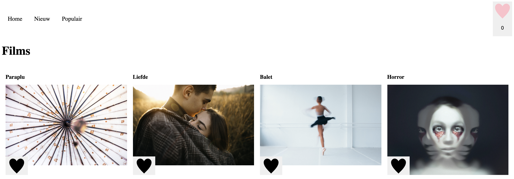

Frontend bestond uit drie opdrachten, elke opdracht werd steeds moeilijker. Ik vind frontend erg interessant maar ook moeilijk en wil het graag beter leren. Ik heb tijdens deze specialisatie geleerd om correct code te schrijven, mijn javascript vaardigheden verbeterd, doelgericht informatie opzoeken op internet en mij comfortabeler te voelen bij coderen.
De eerste opdracht was: "Ontwerp een user interface voor een gegeven use case. Werk je ontwerp uit in HTML, CSS en Javascript om te kunnen testen in een browser." Ik had voor de case gekozen "In een verzameling films wil ik een aantal leuke films kunnen bewaren om ze later te bekijken."
Hieronder zie je hoe het eindontwerp eruit ziet, het gaat hierbij vooral om de interactie. Als je op een zwart hartje klikt wordt het roze en zie je een optelling onder het roze hartje rechts bovenin. Helaas is dit een screenshot dus werkt de interactie hier niet.

De tweede opdracht was: "Werk een functionaliteit uit die je kan bedienen met 'click' en nog een user interactie, zoals het toetsenbord, tab, dubbel click, swipe, long press, force touch, of iets anders... Werk je ontwerp uit in HTML, CSS en Javascript om te kunnen testen in een browser."
Hieronder zie je hoe het eindontwerp eruit ziet. Ik heb een carousel gemaakt van de vakantiefoto's. Door op de pijltjes te klikken ga je door naar de volgende of vorige afbeelding, de carousel is ook te bedienen doormiddel van de pijltjes op je toetsenbord. Wederom werkt de interactie hier niet omdat het een screenshot is.
De derde opdracht was: "Voor deze opdracht ga je een functionaliteit ontwerpen met externe data. De data is JSON die met een REST API van een externe bron wordt ingeladen met Javascript. Als de data geladen is moeten gebruikers je ontwerp op verschillende manieren kunnen bedienen. Verschillende states zijn vormgeven en worden op het juiste moment getoond."
Hieronder zie je hoe het eindontwerp eruit ziet. Ik heb weer een carousel gemaakt maar nu met foto's uit een externe bron. De bolletjes bewegen mee als naar de vorige of volgende foto gaat. Bij elke foto zie je wat voor cijfers ze hebben gekregen. Als je op het rondje met de I klikt, rechtsonderin de afbeelding, krijg je extra informatie te zien over de desbetreffende film. Wederom werkt de interactie hier niet omdat het een screenshot is.